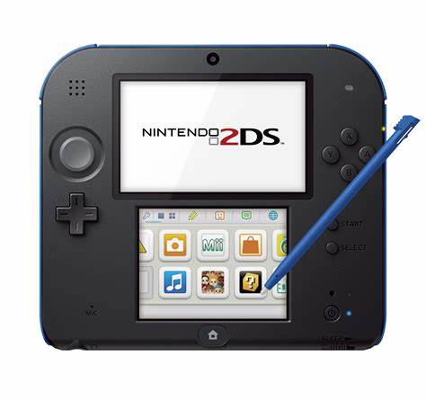

Nintendo 2DS (яп. ニンテンドー2DS нинтэндо: , nɪnˈtɛndoʊ ) - портативная игровая система, разработанная Nintendo. Вышла в свет в августе 2013 года и начала продаваться в Северной Америке, Европе, Австралии и Новой Зеландии с 12 октября 2013 года, совпав с выпуском Pokémon X and Y.
Nintendo 2DS - упрощенная версия системы Nintendo 3DS, которая всё же содержит такое же аппаратное обеспечение, сходную функциональность и совместимость с программным обеспечением, разработанным для Nintendo DS и 3DS. Однако 2DS отличается своим новым плиточным форм-фактором от дизайна раскладушки, используемого её предшественниками, а также отсутствием характерного Nintendo 3DS автостереоскопического 3D дисплея. 2DS продается параллельно с существующиеми 3DS моделями для стимуляции расширения рынка игр Nintendo 3DS. Президент Nintendo of America Реджи Фис-Эме заявил, что именно 2DS изначально нацелена на юных игроков (тех, что младше 7 лет), тем, кому ранее советовали не использовать функции 3D на 3DS из-за возможных проблем со здоровьем глаз.
Nintendo 2DS была принята по-разному. Пока Nintendo хвалили за то, как она назначала цену и преподносила 2DS наравне с её более старшими аналогами, основная критика была направлена на обратное развитие по сравнению с 3DS, такое как дизайн, который некоторые посчитали менее привлекательным нежели у 3DS, низкое качество звука и долговечность аккумулятора. Однако, дизайн 2DS восхваляли некоторые критики за большую твердость и приятность на ощупь, чем у 3DS, особенно за её целевой рынок. Некоторые критики также посчитали, что отсутствие поддержки 3D было признанием Nintendo, что эта разработка была лишь прихотью. И всё же Nintendo позже заявила, что автостереоскопический 3D останется частью их будущих планов.
Продажи Nintendo 2DS поднялись 3 недели спустя после начала в Великобритании, после того, как продавцы снизили цены из-за невысоких продаж. Приставка была доступна по цене около £110, но большинство продавцов, включая Argos, Amazon и Tesco снизило цену до £100, что совпало со школьными каникулами. В итоге продажи Nintendo 2DS возросли на 64% через пару недель, сделав её самой продаваемой за месяц приставкой в Великобритании, не включая сюда продажи Nintendo 3DS и 3DS XL. В течение третьего квартала 2013 года, продавец видеоигр GameStop сообщила, что мировые продажи приставки возросли на 15.3%, в основном вследствие высоких продаж Nintendo 2DS и 3DS
МагазОсновные характеристики Карта памяти в комплекте 4 Гб SDHC Изображение Экран 3.53" Экран Сенсорный экранесть Интерфейсы Разъемывыход для наушников Коммуникацииинфракрасный порт, Wi-Fi Устройство для чтения карт памятиесть Мультимедийные возможности Поддерживаемые форматы карт памятиSD, SDHC Звук Встроенный микрофонесть Встроенный динамикмоно Питание Источник питаниясобственный Li-Ion Дополнительно Размеры (ШxВxГ)127x144x20 мм Технические параметры Вес 260 г Дополнительная информация Совместимость с играми для приставок Nintendo DS, Nintendo 3DS Варианты цветового оформлениячерный, белый Объектив Особенностифункции SpotPass для поиска беспроводных точек доступа и получением через них различных данных; функция StreetPass; 1 внутренняя и 2 внешних камеры; нижний сенсорный экран: 3.02 дюйма Цены
Источник информации